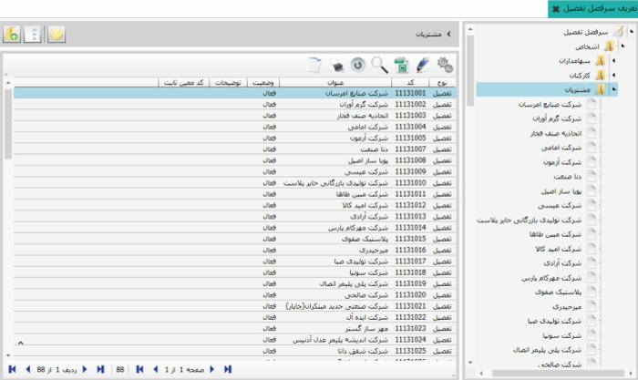
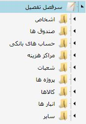
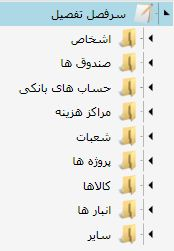

همانطور که گروه های حساب به حساب های کل و حساب های کل
نیز به معین های مربوط به خود تقسیم می شوند،
در نرم افزار سایان این امکان وجود دارد که
معین های دلخواه را نیز بتوانید ریز کنید،
این کار به کمک تفصیل ها صورت می گیرد
و شما اگر نیاز داشتید که در مورد
حساب معینی اطلاعات بیشتری در سیستم داشته
باشید از حساب تفصیل استفاده می کنید.
در این قسمت تعریف کردن تفصیل را
توضیح خواهیم داد و در قسمت های بعد نحوه
استفاده از حساب های تفصیل را در صدور
اسناد حسابداری مشاهده خواهید کرد.
روی منوی تعریف سر فصل تفصیل کلیک کنید، صفحه ی زیر باز می شود

سر فصل های تفصیل در نمودار
درختی شکل بالا مشخص هستند، در داخل هر یک از این
سر فصل ها، تفصیل های مربوط به آنها وجود دارند.
برای مشاهده تفصیل های سر فصل مورد نظر، آن
را از نمودار درختی شکل بالا انتخاب کنید تا در
طرف دیگر تفصیل های مربوط به آن را مشاهده کنید.
در شکل زیر تفصیل های مربوط به گروه اشخاص مشاهده می نمایید.

 تعیین معین ثابت (Ctrl + M) :
با استفاده از این گزینه شما
می توانید برای تفصیل و یا گروه های تفصیل
تعریف شده در سیستم معین ثابت مشخص کنید با
کلیک بر روی این گزینه صفحه زیر باز می شود :
تعیین معین ثابت (Ctrl + M) :
با استفاده از این گزینه شما
می توانید برای تفصیل و یا گروه های تفصیل
تعریف شده در سیستم معین ثابت مشخص کنید با
کلیک بر روی این گزینه صفحه زیر باز می شود :

می توانید برای هر یک از
سرفصل های تفصیل شکل رو به رو حساب تفصیل جدید
ایجاد کنید. نکته قابل توجه این است که فقط برای
سر فصل تفصیل «سایر تفصیل ها» می توانید از
این قسمت حساب تفصیل ایجاد کنید. برای ایجاد
گروه و یا حساب تفصیل در سرفصل های اشخاص،
صندوق ها و ... باید از زیر سیستم اطلاعات
مشترک اقدام نمایید که در راهنمای استفاده
از سیستم اطلاعات مشترک توضیح داده شده است.
ابتدا نحوه ایجاد حساب تفصیل را برای
سر فصل سایر تفصیل ها ارائه می دهیم

از نمودار درختی، «سایر تفصیل ها» را
انتخاب کنید سپس گزینه اضافه را از جدول سمت
چپ انتخاب نمایید تا فرم شکل زیر باز شود:
 از این قسمت از فرم بالا می توانید با توجه به
نیازتان گروه تفصیل یا حساب تفصیل ایجاد کنید.
با وارد کردن عنوان گروه یا تفصیل مورد نظر و
کلیک روی گزینه تایید، گروه تفصیل یا تفصیل مورد نظر
ایجاد می شود. برای ایجاد تفصیل در سرفصل های تفصیل
باید از صفحه اصلی نرم افزار، منوی «اطلاعات مشترک»
را انتخاب کنید تا صفحه مربوط به آن باز شود.

از این قسمت از فرم بالا می توانید با توجه به
نیازتان گروه تفصیل یا حساب تفصیل ایجاد کنید.
با وارد کردن عنوان گروه یا تفصیل مورد نظر و
کلیک روی گزینه تایید، گروه تفصیل یا تفصیل مورد نظر
ایجاد می شود. برای ایجاد تفصیل در سرفصل های تفصیل
باید از صفحه اصلی نرم افزار، منوی «اطلاعات مشترک»
را انتخاب کنید تا صفحه مربوط به آن باز شود.

صفحه «اطلاعات مشترک» دارای منو های «تعریف اطلاعات اشخاص»، «تعریف سر
فصل کالاها»، «تعریف حساب های بانکی»، «تعریف صندوق ها»،
«تعریف شعبات» و «تعریف پروژه ها» است که عنوان این
منو ها در لیست سرفصل تفصیل ها نیز وجود دارد،
یک نمونه برای تعریف تفصیل در نظر می گیریم.
 همان طور که در شکل
بالا مشاهده می کنید از صفحه «اطلاعات مشترک»
منوی «تعریف اطلاعات اشخاص» و گروه اشخاص
«مشتری ها» انتخاب شده است و لیست مشتری ها
را در جدول نمایش می دهد. در واقع وقتی
از این قسمت گروه اشخاص ایجاد کرده و در
آن اشخاص مورد نظرتان را تعریف می کنید،
سیستم به طور خودکار این سر فصل ها و
اشخاص ایجاد شده را در قسمت سر فصل تفصیل ها
نیز ایجاد می کند.(شکل صفحه 11 را با لیست
مشتری ها در شکل بالا مقایسه کنید، مشاهده
خواهید کرد که هر دو لیست یکسان هستند.)
حال برای ایجاد تفصـیل جدید کافی است
از شکـل بالا شخص جدیدی را در مشتـری ها تعریف کنید،
برای این کـار گـزینه اضافه را انتخاب کنید (F8)
تا فرم شکل زیر باز شود.
همان طور که در شکل
بالا مشاهده می کنید از صفحه «اطلاعات مشترک»
منوی «تعریف اطلاعات اشخاص» و گروه اشخاص
«مشتری ها» انتخاب شده است و لیست مشتری ها
را در جدول نمایش می دهد. در واقع وقتی
از این قسمت گروه اشخاص ایجاد کرده و در
آن اشخاص مورد نظرتان را تعریف می کنید،
سیستم به طور خودکار این سر فصل ها و
اشخاص ایجاد شده را در قسمت سر فصل تفصیل ها
نیز ایجاد می کند.(شکل صفحه 11 را با لیست
مشتری ها در شکل بالا مقایسه کنید، مشاهده
خواهید کرد که هر دو لیست یکسان هستند.)
حال برای ایجاد تفصـیل جدید کافی است
از شکـل بالا شخص جدیدی را در مشتـری ها تعریف کنید،
برای این کـار گـزینه اضافه را انتخاب کنید (F8)
تا فرم شکل زیر باز شود.
 فرم شکل بالا را کامل کنید و
از انتهای فرم گزینه «تایید» را انتخاب نمایید.
مشاهده می کنید که شخص ایجاد شده هم به گروه اشخاص
«مشتری ها» در صفحه «تعریف اطلاعات اشخاص» و هم به
عنوان تفصیل جدید به شکل صفحه 11 اضافه می شود.
فرم شکل بالا را کامل کنید و
از انتهای فرم گزینه «تایید» را انتخاب نمایید.
مشاهده می کنید که شخص ایجاد شده هم به گروه اشخاص
«مشتری ها» در صفحه «تعریف اطلاعات اشخاص» و هم به
عنوان تفصیل جدید به شکل صفحه 11 اضافه می شود.

 برای تعریف تفصیل برای سر فصل تفصیل های
دیگر نیز مانند آنچه که در بالا گفته شد عمل کنید.
برای تعریف تفصیل برای سر فصل تفصیل های
دیگر نیز مانند آنچه که در بالا گفته شد عمل کنید.